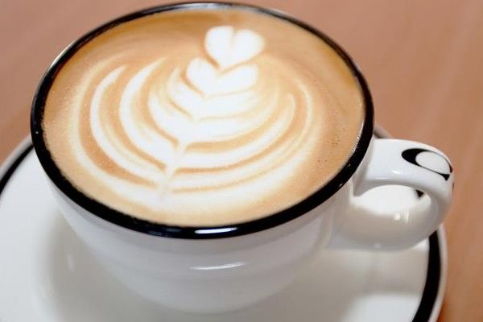

来杯咖啡吗？ |
|
|
 |
拿铁拿铁咖啡，亦称鲜奶咖啡（意大利语：caffè latte）是诸多意大利式的拿铁咖啡中的一种。在英语的世界里，latte是caffè latte的简称，泛指由热鲜奶所冲泡的饮品。而法语单词lait与意大利语单词latte同义，都是指牛奶。Caffè Latte就是所谓加了牛奶的咖啡，通常直接音译为“拿铁咖啡”甚至“拿铁”或“那提”。至于法文的café au lait就是咖啡（café）加至（au）牛奶（lait）之意，一般人则称为“咖啡欧蕾”、或是“欧蕾咖啡”（或昂列咖啡）。 直到1980年代，拿铁咖啡一词才在意大利境外使用。一般的拿铁咖啡的成分是三分之一的浓缩咖啡加三分之二的鲜奶，并加入些许奶泡。它与卡布奇诺相比，有更多鲜奶味道。 |
|
| 版权所有©黄贵波 | |